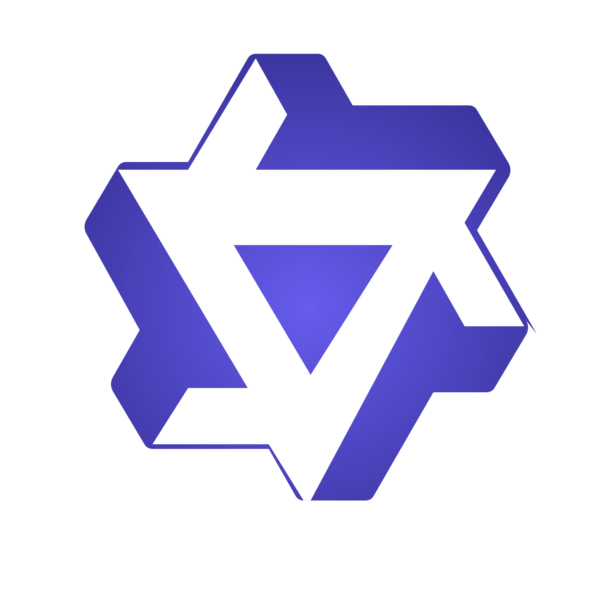

大模型应用研究项目 (LLM Application Research Projects)
小参数语言模型伪词习得能力探索 —— 基于 SFT 指令微调与 LoRA 优化
核心目标：本项目是一项结合计算心理语言学与指令微调的交叉实验。旨在探究小参数 LLM (Qwen3-0.6B) 在 SFT 指令微调之后对结构化新知识的表征构建能力，解决模型在特定语境下的“语义真空”与“对齐”挑战。
研究流程：结合 MRC 词典与 Wuggy 工具构建原始伪词 → 利用 DeepSeek V3 编制伪词义 → 基于4种指令策略制作400条指令 → 基于 LLaMA-Factory 执行 LoRA 微调 → 建立基于 SBERT 的自动化语义相似度评测链路。
研究结果：实验证明模型初步具备语义迁移能力 (余弦相似度 0.68)，还需进一步探讨提示策略和模型参数的影响。

AI辅助二语写作中的提示词策略 —— 基于英文说明文写作过程的混合方法考察
核心目标：本研究基于活动理论，通过混合方法考察，关注学生如何设计和部署提示词与 AI 进行交互。
研究流程：深度追踪 7 名学生的完整英文写作流 → 对交互过程进行逆向 Prompt 分析与文本挖掘。
研究结果：揭示了学生对“翻译类”提示词的强依赖性，并为优化 AI 辅助写作的 Prompt 预设与反馈机制提供了策略建议。

自然语言处理与量化研究项目 (NLP & Quantitative Research Projects)
中国英语学习者对英语词汇重音分布的隐性习得：一项眼动研究
核心目标：考察中国英语学习者是否能够隐性习得英语词汇重音的统计分布规律（首音节重音 > 次音节重音），并利用该概率信息在单词识别的早期阶段（前两个音节内）实时预测目标词。
研究流程：设置 24 组关键词对（前两音节音段相同但重音位置不同） → 录音并利用 Python 进行声学标注 → 开展眼动实验 → 对 Eyelink 数据 (2.7G) 进行处理 → 构建广义加性混合模型 (GAMM)，分析注视概率随时间变化的非线性动态曲线。
研究结果：GAMM 模型结果显示，二语者能够提取并利用词汇重音信息，在语音流尚未完全展开时实现单词的实时识别。
数字人文视角下的《疯狂动物城》性别话语分析
核心目标：定量分析电影文本中角色的性别话语权差异及潜在的社会刻板印象。
研究流程：利用 R 语言清洗、构建语料库 → 构建 TF-IDF 及情感极性特征矩阵 → 建立混合效应模型进行显著性检验。
研究结果：发现性别在词汇使用与情感倾向上均无显著差异；项目以 Quarto 构建动态文档并部署于 GitHub Pages。